광학기사 (2021-05-15 기출문제)
1과목: 기하광학 및 광학기기
1. 렌즈의 초점거리가 5cm이고, 조리개는 8인 상태의 카메라로 3m 거리에 있는 물체를 촬영하고자 한다. 허용 가능한 착란원(circle of confusion)의 반경을 0.02mm라고 할 때, 근점(near point)은 얼마인가?
- 약 150cm
- 약 218cm
- 약 252cm
- 약 270cm
(정답률: 38%)

2. 수차에 대한 설명 중 틀린 것은?
- 단일 오목 구면 거울의 구면 수차는 없다.
- 색수차는 렌즈 유리 재질의 분산 특성에 기인한다.
- 구면 수차는 렌즈 앞에 작은 스톱(stop)을 사용하면 상당히 감소될 수 있다.
- 구면수차는 렌즈를 비구면으로 가공하면 상당히 감소시킬 수 있다.
(정답률: 78%)
3. 평행광선이 렌즈의 왼쪽에서 입사할 때, 다음 렌즈 중 구면 수차가 가장 작은 렌즈는? (단, 직경과 초점거리는 모두 같고 q는 코딩톤(Coddington) 형상인자이다.)
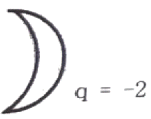
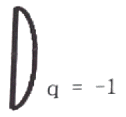
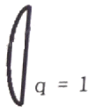
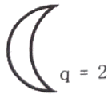
(정답률: 87%)
4. 굴절률이 1.6인 매질에서 광이 2.0×108m 진행할 때 광학적 거리(optical path length)는?
- 3.0×108m
- 3.2×108m
- 3.5×108m
- 3.8×108m
(정답률: 89%)
5. 물체와 상의관계가 아닌 것은?
- 입사동과 출사동
- 제1초점과 제2초점
- 제1주요점(주점)과 제2주요점(주점)
- 제1절점(마디점)과 제2절점(마디점)
(정답률: 82%)
6. 두꺼운 렌즈 유리의 굴절률을 n, 첫째 면의 굴절능을 k1, 둘째 면의 굴절능을 k2, 두께를 d라 할 때 둘쨰 면의 정점으로부터 제2주요면까지의 거리 δ는? (단, 유효 초점거리에 대한 유효 굴절능은 k이다.)
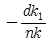
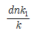
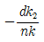
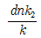
(정답률: 84%)
7. 빛이 수면에서 반사할 때 편광각은 53°이다. 빛이 53°의 각을 이루며 물에 입사할 때 굴절각은?
- 53°
- 41°
- 39°
- 37°
(정답률: 82%)
8. 사람이 직사각형 카드를 평면거울과 평행하게 들고 있다. 그 사람이 카드의 상을 볼 수 있기 위한 거울의 최소 면적은 카드 면적의 몇 배인가?
- 1
- 1/2
- 1/4
- 1/8
(정답률: 91%)
9. 바늘구멍 사진기 앞 2.0m 거리에 크기가 15cm의 물체가 놓여 있다. 바늘구멍으로부터 스크린까지의 거리가 40cm 일 때 스크린에 맺힌 상의 크기는 얼마인가?
- 1.0cm
- 2.0cm
- 3.0cm
- 5.0cm
(정답률: 70%)
10. 렌즈에 관한 설명 중 틀린 것은?
- 볼록렌즈는 실상 또는 허상을 얻을 수 있다.
- 두꺼운 렌즈에서 절점은 광선의 편향이 일어나지 않는 점이다.
- 렌즈를 해석하는 기하광학에서는 광경로의 가역성의 언리가 성립하지 않는다.
- 단일발산 렌즈는 항상 광선을 넓게 퍼뜨리므로 발산렌즈에 의해 맺힌 상은 항상 허상이다.
(정답률: 89%)
11. 렌즈를 통과한 광선의 굴절각이 빛의 파장에 따라 다르기 때문에 일어나는 수차는?
- 코마
- 색수차
- 구면수차
- 비점수차
(정답률: 89%)
12. 사람의 눈이 원근에 따라서 항상 똑똑한 상을 볼 수 있게 하는 것과 가장 관계가 깊은 것은?
- 망막의 모양
- 홍채의 위치
- 눈동자의 크기
- 수정체의 곡률의 크기
(정답률: 85%)
13. 어떤 카메라의 셔터속도를
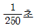
, 조리개의 F-수를 2로 하였더니 노출량이 적당하였다. 조리개의 F-수를 1.4로 변화시키면서 동일한 노출량을 유지하려면 셔터속도는 몇 초가 되어야 하는가?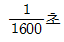
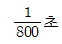
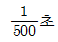
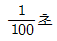
(정답률: 92%)
14. 구면수차를 완전히 제거하기 위한 카세그레인형 망원경의 주경과 부경 형상이 바르게 나열된 것은?
- 구면-타원면
- 포물면-쌍곡면
- 쌍곡면-구면
- 타원면-구면
(정답률: 91%)
15. 다음 중 수차가 가장 작은 경우는?
- 구면경의 횡배율이 0일 때
- 구면경의 상측 초점에 상이 생길 때
- 구면경의 곡률중심에 점물체를 둘 때
- 구면경의 물체측 초점에 점물체를 둘 때
(정답률: 83%)
16. 굴절률이 1.60인 초자로 만든 얇은 등볼록렌즈 한 면의 곡률반경은 8.00츠이다. 이 렌즈의 굴절능을 구하면?
- +15.0 디옵터
- -15.0 디옵터
- +25.0 디옵터
- -25.0 디옵터
(정답률: 75%)
17. EFL 100mm, f-2, FOV 45°의 광학계에서, 3차 구면수차에 의하여 축상에서 직경 24㎛의 spot이 형성되었다. 이 광학계의 시야를 15°로 축소하고, f-수를 4로 하였을 때, 축상에서 spot의 직경은 얼마인가?
- 3㎛
- 6㎛
- 8㎛
- 12㎛
(정답률: 33%)
18. 대안렌즈의 초점거리가 2.0cm, 대물렌즈의 초점거리가 100cm인 망원경이 있다. 배율은 얼마인가?
- 45배
- 50배
- 1/50배
- 200배
(정답률: 87%)
19. 바로 선 물체가 오목 거울 앞의 초점과 구심 사이에 놓여있다. 이 때의 상으로 옳은 것은?
- 바로 선 실상
- 바로 선 허상
- 거꾸로 선 실상
- 거꾸로 선 허상
(정답률: 83%)
20. 아베수(Abbe number; 분산능의 역수)가 30인 유리로 만들어진 프리즘의 편의각(angle of deviation)이 25도 이었다면, 이 프리즘의 프라운호퍼 F라인과 C라인 간의 각 퍼짐(angular spread)은 몇 도인가?
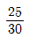
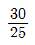
- 5
- 55
(정답률: 90%)
2과목: 파동광학
21. 마이켈슨 간섭계의 광분할기의 반사율이 75%이다. 전반사경 M1, M2에서 반사되어 스크린에 도달한 광파의 진폭을 E1, E2라고 할 때,
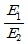
의 크기는 얼마인가? (단, 각각의 경우에서 광속분할기의 이면에서의 반사와 광속분할기와 거울에서의 흡수는 무시한다.)- 1/9
- 1/3
- 1
- 3
(정답률: 37%)
22. 공기 중에서 굴절률이 n인 유리판을 편광자로 사용하고자 할 때 편광각(Brewster angle)은?
- tan-1(n)
- tan(n)
- sin-1(n)
- sin(n)
(정답률: 79%)
23. 다음 광학 결정 중 비등방성(anisotropy)의 특성이 다른 하나는?
- 운모
- 수정
- 방해석
- 물
(정답률: 92%)
24. exp[-π(x2+y2)]의 함수를 푸리에 변환시켰을 때 결과는?
- δ(fx,fy)
- sinc(fx)sinc(fy)
- exp[-π(fx2+fy2)]
- sinc2(fx)sinc2(fy)
(정답률: 86%)
25. 단일슬릿에 의한 회절시험에서 슬릿의 폭을 넓히면 회절상의 전체 밝기 및 회절상 사이의 간격은 어떻게 되겠는가?
- 밝기는 밝아지고 간격은 좁아진다.
- 밝기는 밝아지고 간격은 넓어진다.
- 밝기는 어두워지고 간격은 좁아진다.
- 밝기는 어두워지고 간격은 넓어진다.
(정답률: 84%)
26. 다음 중 홀로그래피(holography)에 관한 설명으로 틀린 것은?
- 홀로그래피는 1948년 D.Gabor에 의하여 처음 발견되었다.
- 기록할 때는 결맞음(coherent) 단색광을 이용한다.
- 기록된 상을 재생할 때 백색광으로도 되는 홀로그램을 백색광 홀로그램이라 한다.
- 사진술과 같이 홀로그래피의 일부분이 없으면 상을 재생하는 것이 불가능하다.
(정답률: 86%)
27. 굴절률 1.5인 매질에서 공기 중으로 입사하는 빛에 대한 전반사 임계각은? (단, 공기는 1이라고 가정한다.)
- 33.7°
- 41.8°
- 48.2°
- 56.3°
(정답률: 89%)
28. 레일리(Rayleigh) 산란에 대한 설명으로 틀린 것은?
- 구름이 하얗게 보이는 현상을 설명한다.
- 산란되는 광량은 진동수의 4승에 비례한다.
- 맑은 날 낮에 하늘이 파랗게 보이는 현상을 설명한다.
- 산란입자의 크기가 입사하는 광 파장보다 작은 경우에 발생하는 현상이다.
(정답률: 83%)
29. 다음의 간섭계 중 진폭분리형 간섭계가 아닌 것은?
- 자민(Jamin) 간섭계
- 마이켈슨(Michelson) 간섭계
- 마하-젠더(Mach-Zehnder) 간섭계
- 프레넬 이중프리즘(biprism) 간섭계
(정답률: 73%)
30. 파장 500nm의 광을 이중 슬릿에 비추어 간섭무늬를 얻은 후, 두 슬릿 중 한쪽에 굴절률 1.5, 두께 1㎛의 얇은 투명막을 붙였더니 무늬가 이동하였다. 이동한 무늬의 수는/
- 1
- 2
- 3
- 4
(정답률: 69%)
31. 공기 중에서 빛이 유리면에 입사할 때, 반사된 빛의 특성에 대한 설명으로 옳은 것은?
- 입사각에 관계없이 p파(TM파)의 위상은 π만큼 달라진다.
- 편광각보다 큰 입사각에서 p파(TM파)의 반사율은 0이다.
- 입사각이 증가할수록 s파(TE파)의 반사율은 증가한다.
- 편광각보다 큰 입사각에서 s파(TE파)의 위상 변화는 0DLEK.
(정답률: 82%)
32. 어떤 매질을 전파하는 평면파가
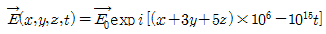
로 주어졌을 때 이 평면파의 전파방향과 나란한 벡터는? (단,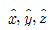
는 각각 x,y,z방향에 대한 단위 벡터이다.)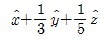
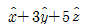
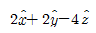
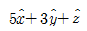
(정답률: 79%)
33. 윤대판(프레넬 zone plate)의 초점거리 f가 가장 안쪽 윤대(zone)의 지름 r과 광원의 과장 λ와 그 관계가 올바로 표시된 것은?
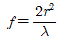
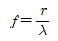
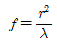
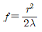
(정답률: 42%)
34. 마이크로파, 가시광선, X-선을 파장이 짧은 것부터 나열한 것은?
- 마이크로파→가시광선→X-선
- 가시광선→X-선→마이크로파
- X-선→가시광선→마이크로파
- 가시광선→마이크로파→X-선
(정답률: 80%)
35. 영(Young)의 이중 슬릿 실험에서 슬릿의 간격이 d이고, 슬릿과 스크린 사이의 간격은 D이다. 이 실험에 사용한 빛의 파장이 λ일 때, 스크린에 나타나는 밝은 띠 사이의 간격은?
- Dλ/2d
- dλ/2D
- Dλ/d
- dλ/D
(정답률: 80%)
36. 파장인 633nm인 헬륨-네온 레이저광을 반사형 회절격자 면에 수직으로 입사시켰더니, 회절각 30 °에서 강한 1차 회절광이 관측되었다. 격자주기 d는 약 얼마인가?
- d=0.6㎛
- d=1.3㎛
- d=1.9㎛
- d=2.6㎛
(정답률: 71%)
37. 제작된 홀로그램의 1/4을 잘라서 재생하였다. 전체를 재생하였을 때와 비교하면 상은 어떻게 되는가?
- 상이 생기지 않는다.
- 상이 1/4에 해당하는 부분만 생긴다.
- 상의 선명도가 나빠진다.
- 상이 1/4로 축소된다.
(정답률: 70%)
38. 빨강, 노랑, 파랑 색의 빛 중에서 파장이 가장 짧은 것은?
- 빨강
- 노랑
- 파랑
- 모두 같다.
(정답률: 78%)
39. 회절격자로 수직입사된 빛이 회절될 때 490nm 파장에 대한 4차 회절광과 같은 위치에서 다른 파장을 갖는 광의 3차 회절광이 관측된다면 이 광의 파장은 약 몇 nm인가?
- 368
- 653
- 858
- 1715
(정답률: 33%)
40. 박막제조 방법 중 이온법으로서 target을 가격하여 방출된 원자를 이용하는 방법은?
- C.B.D.
- M.B.E.
- 진공증착
- 스퍼터링(sputtering)
(정답률: 68%)
3과목: 광학계측과 광학평가
41. 파장 500nm의 빛이 회절격자에 수직하게 입사하고 이웃하는 두 극대가 sinθ=0.1과 sinθ’=0.2를 만족시키는 각도에서 일어났다면 이웃한 슬릿 간의 간격(m)은?
- 5.0×10-6
- 10.0×10-6
- 15.0×10-6
- 20.0×10-6
(정답률: 67%)
42. 자이델(Seidel) 수차에 해당되지 않는 것은?
- 코마
- 색수차
- 구면수차
- 비점수차
(정답률: 71%)
43. 다음 중 망원경의 어느 곳에 정상적인 눈을 놓고 물체를 관찰하는가?
- 출사동(exit pupil)
- 입사동(entrance pupil)
- 출사창(exit window)
- 입사창(entrance window)
(정답률: 71%)
44. 렌즈의 곡면과 평면 유리면 사이에 얇은 공기층에 의해 일어난 것으로, 수직으로 단색광을 입사시키면 렌즈의 구면에서 반사한 빛과 유리판의 표면에서 반사한 빛이 서로 간섭을 일으켜 위에서 보면 간섭무늬가 나타나는 것은 어떤 현상인가?
- Irregularity
- scratch-dig
- Newton ring
- eccentricity
(정답률: 79%)
45. 사람이 물 위에서 물 속에 가라앉은 동전을 보고 있을 때 동전은 어떻게 보이겠는가?
- 실제보다 얕고 크게 보인다.
- 실제보다 깊고 크게 보인다.
- 실제보다 얕고 작게 보인다.
- 실제보다 깊고 작게 보인다.
(정답률: 68%)
46. 광학 유리의 파장에 따른 굴절률 분포를 나타내는 분산 식으로 틀린 것은/
- Cauchy 방정식
- Newton 방정식
- Sellmeier 방정식
- Herzberger 방정식
(정답률: 69%)
47. 프리즘의 종류 중 편광 프리즘으로 틀린 것은?
- 글란-톰슨 프리즘(Glan-Thomson prism)
- 월라스톤 프리즘(Wollaston prism)
- 아미치 프리즘(Amici prism)
- 니콜 프리즘(Nicol prism)
(정답률: 65%)
48. 광통신에 주로 쓰이는 레이저는?
- 이산화탄소 레이저
- GaN 계 반도체 레이저
- 엑시머(Excimer) 레이저
- InGaAsP 계 반도체 레이저
(정답률: 71%)
49. 크라운계 유리에 산화납의 비율을 감소시킬 때 일어나는 광학적 현상으로 옳은 것은?
- 굴절률은 증가하고, 아베수도 증가한다.
- 굴절률은 증가하고, 아베수는 감소한다.
- 굴절률은 감소하고, 아베수는 증가한다.
- 굴절률은 감소하고, 아베수도 감소한다.
(정답률: 30%)
50. 구면경 전방 50cm거리에 위치해 있는 물체의 허상이 구면경 전방 10cm 거리에 형성되었다. 이 구면경의 곡률반경은?
- +16.67cm
- -16.67cm
- +25cm
- -25cm
(정답률: 42%)
51. 카메라로 사진을 촬영할 때 노출시간과 F-수의 관계로 가장 옳은 것은?
- 비례한다.
- 반비례한다.
- 제곱에 비례한다.
- 제곱에 반비례한다.
(정답률: 65%)
52. 빛이 파장에 따라 굴절율이 다른 것을 분산이라 하는데, 이것을 나타내는 아베수(Abbe number) v에 대한 올바른 식은?
- v=(nd-1)/(nF-nC)
- v=(nd+1)/(nF-nC)
- v=(nd+1)/(nF+nC)
- v=(nF-nC)×(nd+1)
(정답률: 73%)
53. 먼 거리에 있는 물체에 펄스 레이저를 쏜 후 반사되어 돌아온 펄스 레이저를 측정하였다. 그 레이저빔 사이의 시간간격이 0.1ms이다. 그 물체까지의 거리(km)는?
- 1.5
- 3.0
- 15
- 30
(정답률: 58%)
54. 프리즘을 이용하는 분광기를 제작하고자 한다. 프리즘의 재질로는 아래의 여러 유리가 있는데 이 중에서 분해능을 최대로 하는 유리는 어느 것인가?
- 511-635
- 574-577
- 584-460
- 6⑤-436
(정답률: 69%)
55. 평면 거울을 a도 만큼 회전시켰을 때 거울에서 반사된 빛은 몇 도 회전하는가?
- 0
- √2a
- a
- 2a
(정답률: 43%)
56. 단일모드 광섬유(Single mode optical fiber)가 다중모드 광섬유(multi mode optical fiber)에 비해 가지는 장점으로 옳은 것은?
- 결합(coupling)이 용이하다.
- 분산이 없으므로 대역이 넓다.
- 제작이 간단하여 가격이 저렴하다.
- 개구수(Numeric Aperture)가 크다.
(정답률: 47%)
57. 결정 중의 전자와 양공(hole)의 속박된 쌍을 가리키는 용어는?
- 포논(phonon)
- 폴라론(polaron)
- 엑시톤(exciton)
- 마그논(magnon)
(정답률: 60%)
58. 빛의 전반사를 이용한 소자로 틀린 것은?
- Penta 프리즘
- Nicol 프리즘
- Amichi 프리즘
- Dove 프리즘
(정답률: 57%)
59. 사람 눈의 가시광선 영역으로 가장 옳은 것은?
- 100 ~ 400nm
- 400 ~ 700nm
- 700 ~ 1000nm
- 1000 ~ 10000nm
(정답률: 76%)
60. 입사동과 광학계에 대한 설명 중 틀린 것은?
- 물체공간에 있어서 입사광선속의 범위를 제한하는 것이 입사동이다.
- 입사동은 구경조리개 앞에 놓인 광학계에 의해 생긴 구경조리개의 상이다.
- 입사동이 물측초점에 있을 때를 물체공간 델리센트릭이라 한다.
- 입사동의 전체 렌즈계에 의해 결상되어진 것이 출사동이다.
(정답률: 57%)
4과목: 레이저 및 광전자
61. 다음 중 복굴절이 일어나는 이유로 가장 적절한 것은?
- 결정의 굴절률이 빛의 편광 방향에 따라 다르기 때문이다.
- 결정의 한방향이 snell의 굴절 법칙에 어긋나기 때문이다.
- 결정에 의하여 빛의 편광 방향이 회전하기 때문이다.
- 결정의 굴절률이 빛의 파장에 따라 변하기 때문이다.
(정답률: 38%)
62. 포겔스 효과(Pockels effect)를 가장 크게 나타내는 결정은?
- KDP
- GaAs
- Quartz
- Zircon
(정답률: 53%)
63. 파장 632.8nm인 파장의 He-Ne 레이저가 지름 1.6mm인 튜브 구경을 갖고 Gauss형의 광속(빛살)을 가진다. 전퍼짐각(full divergence angle)에 가장 가까운 θ값은?
- 0.504 mrad
- 5.04 mrad
- 0.144°
- 8.66분
(정답률: 39%)
64. 레이저에서 흔히 사용되는 FWHM에 대한 설명으로 가장 옳은 것은?
- 4준위 레이저에서 흡수밴드와 준안정상태 사이의 전이를 파장단위로 나타낸 것이다.
- 레이저광 최대 강도의 반에서 정의된 빔의 반경이다.
- 레이저광 최대 강도의 반에서 정의된 짐의 직경이다.
- 레이저광에서 출사되는 빔의 중심 과장의 반치 선폭을 의미한다.
(정답률: 35%)
65. 2개의 구면거울이 서로 마주 보면서 15cm떨어져 있는 레이저 공진기 속에서 진동하는 광의 종모드 간격(자유분광영역)은 얼마인가?
- 1GHz
- 2GHz
- 3GHz
- 4GHz
(정답률: 30%)
66. 다음 중 결정이 복굴절성을 지니는 물질이 아닌 것은?
- 석영(Quartz)
- 방해석(Calcite)
- 질산나트륨(NaNO3)
- 염화나트륨(NaCl)
(정답률: 49%)
67. 광학결정에 의한 빛의 제어 기능 또는 변환 기능이 아닌 것은?
- 광신호를 전기신호로 변환
- 전기신호를 광신호로 변환
- 광으로 음(音)을 제어
- 자기로 광을 제어
(정답률: 48%)
68. 다음 중 균질 선폭확대(homogeneous broadening)의 요인이 아닌 것은?
- 충돌
- 도플러(Doppler)효과
- 레이저 발진관의 압력
- 에너지 준위의 수명(life time)
(정답률: 42%)
69. 레이저 공진기는 서로 마주 보는 두 개의 거울 사이에서 광속이 반사를 반복하면서 오랫동안 머물도록 고안된 것이다. 이는 어떤 간섭계를 이용한 것인가?
- 트위먼-그린(Twyman-Green)
- 뉴턴(Newton)
- 마흐-젠더(Mach-Zehnder)
- 패브리-페로(Fabry-Perot)
(정답률: 45%)
70. 어떤 레이저의 출력이 10W이고 레이저 광속의 직경이 0.1cm이다. 이 레이저를 렌즈로 집속하여 광속의 직경이 0.01cm가 되게 하였다. 이 레이저의 단위면적당 세기(W/cm2)는 몇 배 증가하겠는가?
- 10배
- 100배
- 1000배
- 10000배
(정답률: 48%)
71. 다음 중 레이저의 취급시 가장 주의하여야 할 부분은?
- 전기감전(electric shock)
- 전기누전(electric leakage)
- 빛에 의한 망막손상(eye burning)
- 빛에 의한 피부손상(skin burning)
(정답률: 50%)
72. 동심공명기(confocal cavity)구조로써 거울의 곡률 반경이 0.5m인 HeNe laser(파장 λ=633nm)에서 빔의 허리(beam waist)의 크기는?
- 2.2mm
- 0.22mm
- 1.1mm
- 0.11mm
(정답률: 39%)
73. 다음 중 레이저광만의 고유한 특성을 볼 수 없는 것은?
- 파장폭이 좁다.
- 가간섭성이 좋다.
- 회절이 잘 일어난다.
- 직진성이 좋고, 발산각이 작다.
(정답률: 42%)
74. 굴절률 타원체(index ellipsoid) 방정식이 0.4X2+0.5Y2+0.5Z2=1인 매질에서 광이 진행하고 있다. x축 방향으로 진행하는 광의 굴절률은 얼마인가?
- 1.3
- 1.4
- 1.5
- 1.6
(정답률: 27%)
75. 다음 중 광학적으로 단축(Uniaxial)결정이 아닌 것은?
- KH2PO4(KDP)
- Quartz
- NaCl
- Calcite
(정답률: 33%)
76. 반도체 레이저의 매질인 GaAs의 굴절률이 3.6인 경우 반도체와 공기 사이에서의 반사율은 약 얼마인가?
- 0.32
- 0.64
- 0.71
- 0.77
(정답률: 21%)
77. 반도체 레이저에 관한 설명 중 옳은 것은?
- 반도체 레이저에서 분포밀도의 반전은 전자빔, 광학적 펌핑과 소수캐리어 주입의 세 가지 펌핑 방법이 있다.
- 전자들은 p-형 구역으로부터 n-형 구역으로 주입되어 p-n접점에서 전자와 홀의 재결함으로 레이저 빔을 방출시킨다.
- 반도체의 전반적인 레이저 효율은 저온에서 30% 이하로 얻기 때문에 가장 효율적이지 못하므로 Si과 Ge 같은 간접 에너지대 간격 반도체를 사용하는 것이 곤란하다.
- 접점 레이저 또는 주입 레이저라고도 하는데 반도체를 사용해 출력이 강하기 때문에 재료 가공에도 이용되며 작고 간편해 광통신, 광전자 기구에 중요하다.
(정답률: 43%)
78. 광학결정체에 자장을 유도했을 때 광학적 성질이 변하는 현상을 자기광학효과라 한다. 다음 중 유도 자기장의 방향으로 선형으로 편광된 빛을 전파시킬 때 편광면이 회전하는 현상은?
- Zeeman효과
- Faraday효과
- Cotton-Mouton효과
- 자기 Kerr효과
(정답률: 41%)
79. 어떤 Nd:YAG 레이저가 반복율 50Hz로 에너지가 1mJ이며, 폭이 20ns인 펄스를 발진하고 있다. 이 레이저의 평균 발진출력(Average output power)은 얼마인가?
- 50mW
- 10W
- 1kW
- 50kW
(정답률: 28%)
80. 어떤 레이저 광속을 감광지에 수직으로 입사시킬 때 그림과 같이 감광되었다면 이 레이저의 발진 모드는?
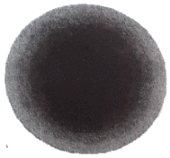
- TEM00
- TEM01
- TEM10
- TEM11
(정답률: 45%)
근점 = (초점거리 × 대상거리) / (대상거리 - 초점거리)
여기서 초점거리는 5cm, 대상거리는 3m - 5cm = 2.95m 이다.
먼저 초점면에서의 허용 가능한 착란원의 크기를 구해보자. 이는 다음과 같이 계산할 수 있다.
초점면에서의 허용 가능한 착란원의 크기 = 초점면의 크기 × (허용 가능한 착란원의 반경 / 초점거리)
초점면의 크기는 조리개의 크기에 비례하므로, 조리개가 8일 때 초점면의 크기는 조리개가 1일 때의 8의 제곱인 64배이다. 따라서 초점면에서의 허용 가능한 착란원의 크기는 다음과 같다.
초점면에서의 허용 가능한 착란원의 크기 = 64 × (0.02mm / 5cm) = 0.256mm
이제 대상면에서의 허용 가능한 착란원의 크기를 구해보자. 이는 다음과 같이 계산할 수 있다.
대상면에서의 허용 가능한 착란원의 크기 = 초점면에서의 허용 가능한 착란원의 크기 × (대상거리 / 초점거리)
따라서 대상면에서의 허용 가능한 착란원의 크기는 다음과 같다.
대상면에서의 허용 가능한 착란원의 크기 = 0.256mm × (2.95m / 5cm) = 15.04mm
이제 근점을 구해보자.
근점 = (5cm × 2.95m) / (2.95m - 5cm) ≈ 218cm
따라서 정답은 "약 218cm"이다. 이유는 대상면에서의 허용 가능한 착란원의 크기가 15.04mm인데, 이보다 작은 크기의 물체는 선명하게 보이게 된다. 따라서 근점은 대상과의 거리가 218cm 이하인 물체들이 선명하게 보이게 된다.